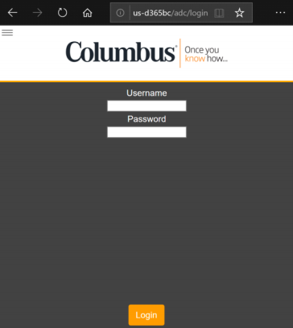
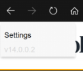
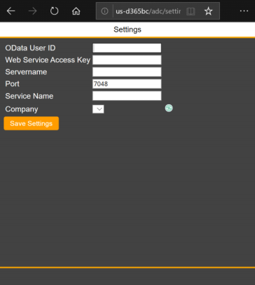
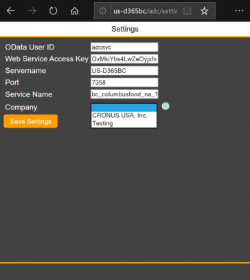

OData user - this is the pre-configure Business Central user name
Web Service Access Key - as configured against the OData user
Servername - the machine name hosting the Business Central server (i.e. D365BC)
Port - the OData port number configured in the Business Central server (i.e. 7048)
Service Name - the Business Central server instance name (i.e. BC-Production)
Company Name - the Business Central Company to work within

